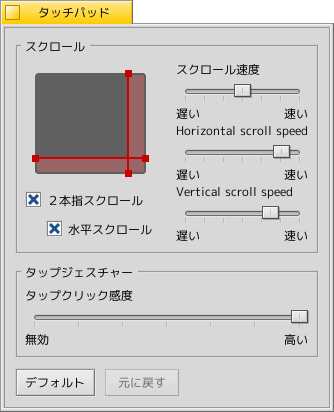

| Indice |
|
Tastiera Mouse Touchpad |
 Periferiche di Input
Periferiche di Input
| Deskbar: | ||
| Percorso: | /boot/system/preferences/Input | |
| Impostazioni: | ~/config/settings/Keyboard_settings ~/config/settings/Mouse_settings ~/config/settings/Touchpad_settings |
Il pannello di preferenze Periferiche di Input combina quelli che una volta erano i pannelli per tastiere, mouse e touchpad, più quelli di qualsiasi altra periferica di ingresso riconosciuta dal sistema. I dispositivi sono elencati sulla sinistra, mentre il pannello sulla destra cambia in base al tipo di dispositivo selezionato e alle funzioni da esso supportate.
 Tastiera
Tastiera

Imposta qui la velocità di ripetizione e il tempo che è necessario prima che la pressione continuata di un tasto ingeneri una ripetizione.
| ripristina tutto ai valori predefiniti | ||
| riporta le impostazioni ai valori che avevano al momento in cui hai lanciato il pannello. |
Mouse

First you set your type of mouse: 1, 2 or 3 button mouse. You can simulate the 2nd (=right) mouse button by holding down CTRL while left-clicking. For the 3rd (=middle) mouse button, it's CTRL ALT and a left-click.
You can rearrange the mouse buttons by clicking on them and choosing their new meaning from the pop-up menu.
With the sliders to the right, you adjust double-click speed, mouse speed and acceleration. The test area below the mouse graphics can be used to check if the double-click speed meets your taste: if double-clicking a word doesn't select it, it's set too fast (or you'll have to get used to clicking quicker...).
There are three that determine how windows react to clicks:
| This is the default setting: you click a window and it gets focus and is raised to the top. | ||
| Clicking a window only gives it the focus, but won't raise it automatically. To do that, you'd have to either click on its title tab or border or click anywhere while holding the window management keys CTRL ALT. | ||
| The window under the mouse pointer automatically gets the focus. Actually raising it, is done as described in the |
Activating relieves you of having to first put the focus on an inactive window in order to trigger widgets like a button or menu. This bears the risk of unintentionally closing a window, for example, by accidentally hitting the close button when aiming for the window tab. On the other hand it speeds up your workflow considerably.
Tutte le impostazioni sono appplicate immediatamente.
| ripristina tutto ai valori predefiniti | ||
| ripristina le impostazioni ai valori che avevano al momeno in cui hai avviato il pannello Mouse. |
Touchpad

By dragging the red vertical or horizontal lines on the touchpad representation, you set the scroll area (slightly reddish against the gray general touch area). Moving your finger on that part of the pad will move the scrollbars of a window accordingly.
To the right are sliders to set the general scroll acceleration and the vertical and horizontal scrolling speed.
The acceleration setting decides how much quicker a list scrolls by if you swish over the scroll area very fast. The scrolling speeds control the general speed when using the scroll area in a "normal" way.
Below the touchpad graphic are checkboxes to enable "Two finger scrolling" for vertical and horizontal scrolling. Move two fingers in parallel vertically or horizontally to move the scrollbars of a window. At least for me, it works best with one finger from the left and one from the right hand.
If you feel comfortable using this feature, you can dispense with setting scroll areas and instead use the whole pad for normal navigation.
At the bottom is another slider to set the tap click sensitivity. If your taps keep getting ignored, increase the sensitivity. If the system registers clicks all the time, while all you want is to move the mouse pointer, try decreasing it.
| ripristina tutto ai valori predefiniti | ||
| riporta le impostazioni ai valori che avevano al momento in cui hai lanciato il pannello. |
Here is a tip that's not related to the Touchpad preferences, but fits the general topic:
Did you know that you can do a drag and drop just by using the touchpad, i.e. not using the buttons? Just do a double click without lifting the finger after the second click. The picked up icon will stick to the mouse pointer and you can drag it around by moving your finger. Lifting your finger will drop the icon.
If your finger reaches a border of the touchpad while dragging an icon, but the mouse pointer hasn't yet reached the screen edge, how can you keep on dragging your icon? As soon as you lift your finger, the icon would be dropped.
Depending on your hardware, there's a nifty feature: just leave your finger without lifting at the touchpad edge. The mouse pointer will keep on moving on auto-pilot.